No feedback found for this session
Regular expressions
Excel
NLP
regular expressions
intermediate
Introduction
This session is intended as a introduction to regular expressions. You should have some prior experience of trying to match and parse free-text data to enjoy this session, and you’ll definitely need to have past experience of reading and writing code. That doesn’t need to be very advanced - if you’re broadly happy with a lookup formula in Excel, for example, you’ll be fine. But this session is code-based and likely to be unsuitable as a first introduction to programming. In the final part of the session, we’ll also run an optional practical exercise, and you’ll need M365 Excel (either web or desktop) for that.
A note on jargon: to keep the technical talk to a minimum, we’ll usually use the word string to refer to arbitrary bits of text in this session. Any ordinary-language descriptions, such as word/sentence/line of text just have their ordinary meaning.
Structure
- What’s the problem with GGC?
- string literals
- meta-sequence for matching digits, words, and white-space
- quantification
- ranges
- anchors
- practical
What’s the problem with GGC?
In the KIND network, we have hundreds of members employed by NHS Greater Glasgow & Clyde (NHS GG&C). When people join the network, we ask them to fill in a free-text field asking for their organisational affiliation. That gives rise to an interesting problem, because there are many different variants of NHS GG&C that people might use. To pull some examples from our submissions, someone could call it BWOSCC (NHS GG&C), or Catering Management GG&C, or GG&C. In fact, that form has received over a hundred different permutations and versions of NHS GG&C over the years.
It’s also received a lot of other, non-NHS GG&C, organisation details too. For example, we have members who record their affiliation as Baillieston Community Care or NHS D&G. Ideally, we’d like to be able to find a way of recognising text with some kind of allowable variations. This is what regular expressions (regex) do: they a way of matching variations in text.
regex101.com
Regular expressions are implemented in many coding languages, and in the more recent versions of Excel. For this session though we’ll use a free-to-access regex writing tool: regex101:
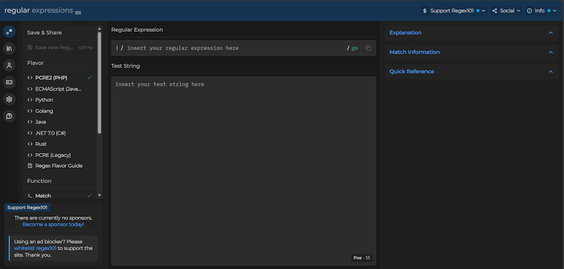
Do note that regex101 isn’t suitable for any real data at all, and should only be used with synthetic examples. But it’s a great training tool, not least because it gives explanations of how your regular expression is working.
TipTask
- open regex101
- familiarise yourself with the interface
- copy and paste the following GG&C variations into the
Test Stringarea
BWOSCC (NHS GG&C)
Catering Management GG&C
GG&C
GG&C acute services
GG&C General Surgery
GGC regex example
All of these starter examples contain the string “GG&C”, which makes detecting these five easy. Our first lesson about regular expressions is that regular expressions can detect string literals, which are snippets of text that you want to match exactly.
TipTask
- add the regular expression
GG&Cto theRegular expressionarea of regex101 - what happens?
You should see that the letters GG&C are matched (highlighted in blue) wherever they appear in our test strings:
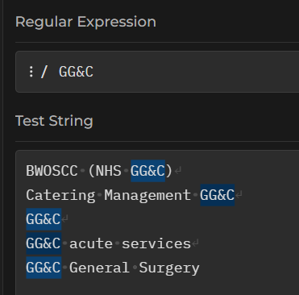
You should see that each line of test text now has a highlighted region, showing that our regex corresponds to at least part of each one of these GGC permutations.
Using a character, number, most punctuation marks, or string as our regex will match that character, number, or whatever, wherever it appears. This sort of literal matching is case-sensitive.
TipTask
- to show that matching is case-sensitive, please add the following line of text to your pool of test strings:
NHS gg&c
- now see if the
GG&Cregex matches that new line of text
Our GG&C regex won’t match that one:
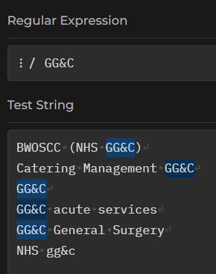
We could also have tried to match single letters/words, numbers, or (most) punctuation marks.
Tip
- try matching the string literal
&
That should work as expected.
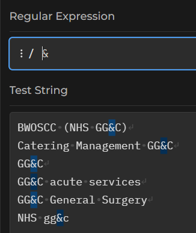
Not all punctuation will behave quite so nicely:
TipTask
- now add the following points to your pool of Test Strings
ggc south sector pharmacy (fl 1)
NHSGGC.
- now try to find that full stop using a string literal…
That should behave in an unexpected way, which we should interpret as a cue to move on to a new aspect of regex: meta sequences.
Meta sequences
If we try to find a . character in our text, we get an unexpected result:
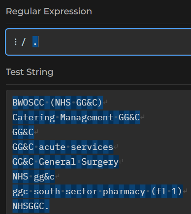
If you really want to match ., your regex will need to be \.. That’s because . on its own is a meta-sequence. That means that it matches many characters, rather than just one. . is the broadest of these - it matches any character. There are lots of these, but the most common meta-sequences are:
\d to match a digit:
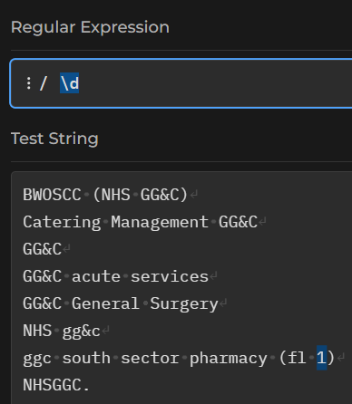
Switching the case of the meta-sequence reverses the meaning. As \d matches digits, so \D will match non-digits:
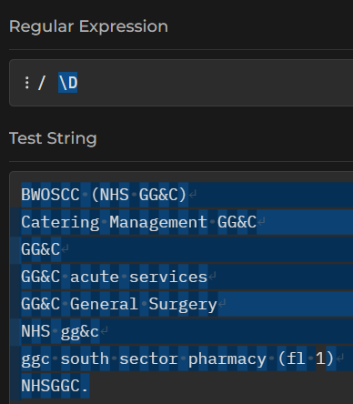
That matches everything that isn’t a digit - spaces, letters, punctuation, the lot. If we wanted to match just word characters, we’d use \w:
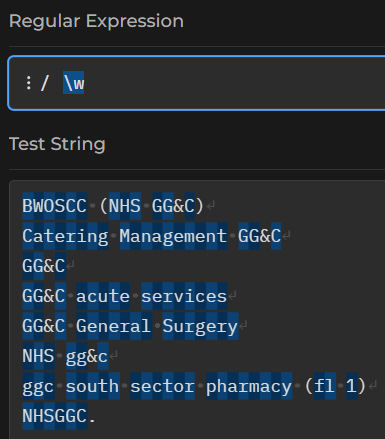
(do just note that word characters include numbers, letters, and underscores, but no other punctuation)
\s will find the white-space, and \S the non-white-space - i.e. the printing characters:
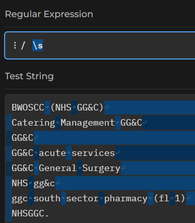
Quantification
Regex has several ways of counting letters. I think the best way of quantifying is to use curly brackets {}. The simplest case, where you’re counting an exact number of characters, is just to use a single number inside the brackets. \d{5} finds five digits in a row, for example.
TipTask
- using curly brackets, write a regular expression to find all the pairs of capital Gs in the test area
You can also use this way of counting to count ranges of values, with the general syntax of {smallest, largest}. So G{1,3} matches 1-3 Gs in a row, for instance. Usefully, both the smallest and largest are optional, so you can also do something like G{2,} to find all two-or-more-Gs in the text, or G{,4} to find G, GG, GGG, and GGGG. Do note that the last example will also match empty lines, because it includes cases with zero Gs.
There are also three shorthand ways of quantifying that you might find useful:
-
G+finds at least one G in a row (soG,GGG, etc) -
G*finds 0 or more Gs in a row (so will match any string length of repeating Gs, including none - making it optional) -
G?makes G optional in a string
Personally, I find those exceptionally confusing, so tend to stick with the curly brackets.
Ranges
Being able to count letters is useful enough, especially since we can effectively make letters optional by asking for 0 occurrences. There’s a more powerful way of getting regexs to deal with optional characters.
TipTask
- try the regex
t[eho]
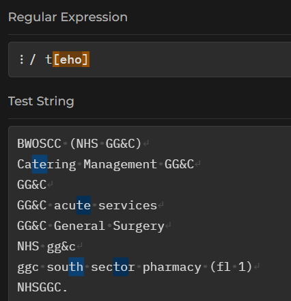
If we put some letters into those square brackets, our regex will match any one letter. In this example, our regex matches a t, and then a choice of either e, h, or o.
We could also use a - to indicate a range of letters that we’d like to match. So t[e-t] will match a t followed by any single letter from e to t:
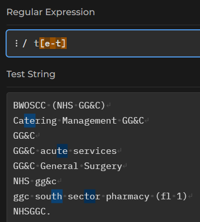
We could add several ranges inside one set of brackets - if you look at regexes in the wild, you’ll often see [a-zA-Z] as a way of matching any letter character, because that’s not readily possible using the standard word/whitespace/digit meta-sequences.
Anchors
So far, our regexes have just matched small chunks of strings. How would we match an entire word (or line) containing a match? The answer depends on understanding anchors.
Try a new regex ^. That should show a line at the left-most margin of your test strings:
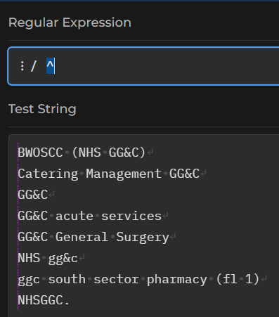
Similarly, the regex $ should show a line at the right-hand margin:
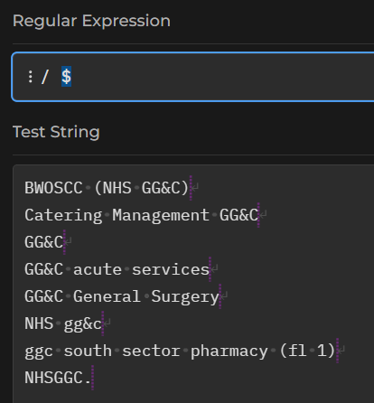
The ^ and $ characters are anchors, indicating the start and end of a line of text respectively. We could match every line - including blank ones - with ^.*$, or we could match any line containing NHS with ^.*NHS.*$, read as “start the line, then any number of characters, then NHS, then anything you like, then the end of the line.
TipTask
- try the regex
^.*$ - now try the regex
^.*NHS.*$ - what’s the difference?
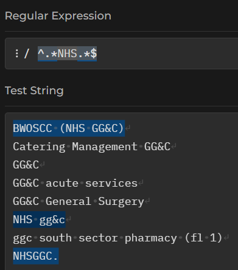
As well as line anchors, you can also specify word boundaries using \b. So NHS\b should find NHS at the end of a word, where no word character follows it:
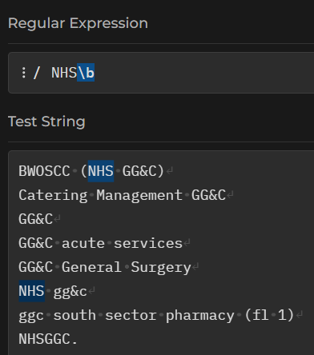
Note that - again - we’re just matching those few characters with this example. How would you re-work the regex to select the entire line that matched NHS\b?
Practical exercise
For the final few minutes of the session, we’ll do an exercise in Excel. Regular expressions are new in Excel, and so this exercise requires the newest version of Excel: either installed on your computer, or the web version. The task is simple: please accurately classify a small dataset into NHS GG&C/non-NHS GG&C. I believe there are 10 responses from GGC, and 13 not from GGC in the sample data. You can either download the sample workbook, or create a new workbook, and then copy and paste the following names into Excel:
| names |
|---|
| NHS Glasgow |
| GG&C acute services |
| NHG Greater Glasgow and Clyde |
| NHS Greater Glasgow & Clyde |
| NHS gg&c |
| NHSGGC HSCP North East |
| NHS Greater and Glasgow and Clyde |
| NHS/GGC |
| Pharmacy Services GGC |
| NHSGG&C |
| Aberdeenshire County Council |
| Argyll and Bute HSCP |
| Baillieston Community Care |
| Centre for Sustainable Delivery / NHS Golden Jubilee |
| GCU |
| Hanover Housing Association |
| NHS D&G |
| NHS Healthcare Improvement Scotland |
| Nhs Lothian |
| North Lanarkshire |
| SCVO (Scottish Council for Voluntary Organisations) |
| scottish care |
| The State Hospital |
There are three regular expression functions in Excel.
REGEXTEST is the easiest to use. The syntax is REGEXTEST(string, regex), and you should be able to supply any of the regex examples from this session directly. As the name suggests, this function returns TRUE/FALSE.
REGEXEXTRACT - an Everest of a name for those of us with dyslexia - will extract just the matching text from the regex using similar syntax.
REGEXREPLACE - probably not directly useful for this task, but allows regex-based find and replace
Acknowledgements
I’m especially grateful to Ben Harley, Kirsty Mangin, Brian Orpin, and Donna McLean for helping to prototype this session, and to Elizabeth Richardson, Zoe Turner, Callie Lorimer, Geraldine Kelly, Julian Augley, Clare Brown, Daniel Kovocses, Debs Calvin, Abram McCormick, and Fatima Davila Acosta for suggestions made during the session pilot.